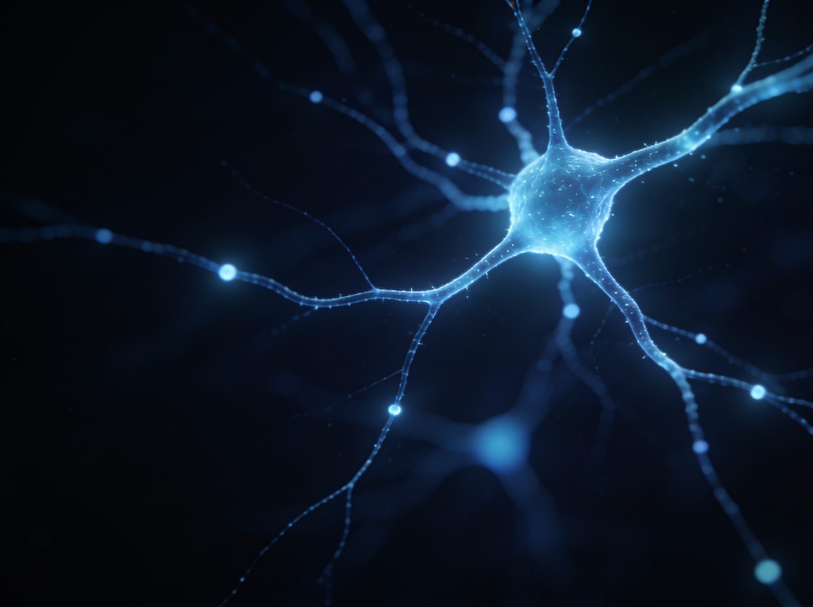
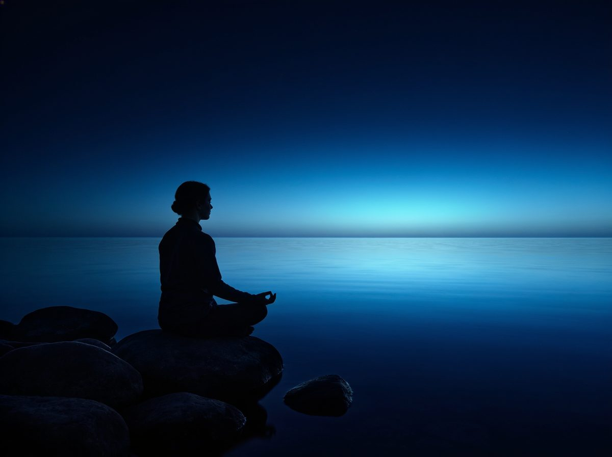

מהתובנה לפעולה
כל עיקרון מדעי מתורגם לתרגול יומי קצר ופשוט, שנכנס לסדר היום האמיתי שלכם — לא לעוד רשימה שנשכחת.
תוכנית לפיתוח אישי · נוירוסיינס × גוף × AI
SHIFT היא תוכנית לפיתוח אישי שמחברת בין מדעי המוח, מודעות גופנית ובינה מלאכותית — מסע מעשי מתגובתיות אוטומטית אל חיים של בחירה, יצירה וצמיחה.
רובנו מפרשים את העולם מתוך פחד, לחץ ומצב פנימי הישרדותי. גם כשאנחנו מצליחים לגעת לרגע בחיים ה"מושלמים" שאנחנו מייחלים להם — בלי לשנות את דרך החשיבה, ההרגלים ורמת המודעות, הכול חוזר לאותו מקום. SHIFT נולדה כדי לשנות את זה מהשורש.
SHIFT הוא לא מוצר אחד — הוא דרך. אפשר לפגוש אותה באירוע חי, בתוכן היומיומי, או בתהליך ליווי מלא.
הידע קיים כבר מאות ואלפי שנים. הכלים שנגישים לנו היום מאפשרים לקחת את התובנות של המדענים, אנשי הרוח וחוקרי הגוף והנפש — לרמות חדשות של התפתחות וריפוי.
המוח שלנו ניתן לעיצוב בכל גיל. אנחנו לומדים איך נבנים האוטומטים של פחד ולחץ — ואיך, צעד אחר צעד, מאמנים את המוח לדפוסים חדשים של ביטחון, ריכוז ושמחה. נוירופלסטיות, אפיגנטיקה ומדעי ההתנהגות — בשפה פשוטה וברורה.

שינוי אמיתי לא קורה רק בראש. תרגול יומי של נשימה, תנועה והקשבה לגוף מפעיל את כל המערכות שלנו — ומאפשר לתודעה החדשה להיטמע בגוף, לא רק במחשבה.

ה-AI הוא מראה וכלי צמיחה אישי. הוא מלווה, משקף ומדייק את התרגול היומיומי — והופך תובנות עמוקות לפעולות קטנות ומדויקות, שמתאימות בדיוק לכם.
לא עוד תאוריה שנשארת בראש. הרגלים יומיומיים קטנים, מגובים במדע, שמקודדים מחדש את מערכת ההפעלה הפנימית שלנו — ומשנים מהשורש את האופן שבו אנחנו חושבים, מרגישים ופועלים.
כל עיקרון מדעי מתורגם לתרגול יומי קצר ופשוט, שנכנס לסדר היום האמיתי שלכם — לא לעוד רשימה שנשכחת.
כל הרגל מפעיל גם את הגוף וגם את התודעה. כי שינוי שנשאר בראש בלבד — לא מחזיק לאורך זמן.
לא טיפול בסימפטומים, אלא קידוד מחדש של הדפוסים שמייצרים אותם — מהישרדות ליצירה.
זה תרגיל אמיתי מתוך היום הראשון במסלול. הוא לוקח פחות מדקה, והוא הדרך הקצרה ביותר להרגיש על מה כל זה מדבר.
טעימה מתוך יום 1
לרגיעה מהירה אפשר לעשות 1–3 סבבים; במחקר עצמו נבדק דווקא תרגול יומי של כ-5 דקות (Balban ואחרים, 2023).
אם את/ה בהיריון, עם מצב לב או נשימה, או אפילפסיה — התייעצ/י עם רופא/ה לפני תרגילי נשימה.
מזהים את האוטומטים — הרגעים שבהם פחד ולחץ מנהלים אותנו בלי שנשים לב.
לומדים את המדע שמאחורי התודעה — איך המוח, הגוף וההרגלים מעצבים את המציאות שלנו.
מטמיעים הרגלים מעצבי תודעה — תרגול יומי קצר שמחבר גוף, מוח ורגש.
עוברים מהישרדות ליצירה — חיים של בחירה מודעת, צמיחה ואהבה.
שלושה שבועות. צעד יומי אחד. תהליך דיגיטלי מלווה שמתחיל בהיכרות עם המערכת — ונגמר בתוכנית יצירה משלכם. הנה הוא, מבפנים.
השבוע הראשון הוא הבסיס של הכל.
לפני שנשנה הרגלים, אמונות או דפוסים — כדאי להבין מה קורה בגוף. נראה כי חלק ניכר מהמנגנונים של מערכת העצבים התפתחו לאורך האבולוציה כדי לשמור עלינו בחיים — לא בהכרח כדי לגרום לנו להיות מאושרים.
השבוע נכיר את מערכת העצבים: את מצב ההשרדות ואת מצב היצירה, את ההורמונים שמשפיעים עלינו, את הדפוס האישי תחת לחץ, ונלמד כלי ויסות ראשון. זו המפה שממנה ייגזר כל שינוי בהמשך.
נראה כי המוח לא "עוצב" בראש ובראשונה לאושר, אלא לשרוד.
רובנו חיים בתחושה שאירועים "גורמים" לנו רגשות: הבוס אמר משהו — נעלבתי. נתקעתי בפקק — התעצבנתי.
בכל רגע נתון המוח מייצר פעילות חשמלית קטנה שאפשר למדוד (במכשיר שנקרא EEG). הפעילות מופיעה ב"גלים" בתדרים שונים.
מאחורי כל מחשבה, תחושה ותגובה עומדת גם כימיה. הורמונים ומוליכים עצביים הם מעין "שליחים" כימיים שמעבירים מסרים בגוף ובמוח,
כמעט כל מיומנות שיש לנו עברה דרך דומה. נהיגה, קריאה, קשירת שרוכים — כולן התחילו כמאמץ מודע ומאומץ, והפכו עם הזמן לאוטומטיות. תהליך דומה,
לפני שנסכם את השבוע, נאמר משהו חשוב: אם במהלך הימים האלה חזרת לדפוס ישן, דילגת על תרגול, או חשבת "מה הטעם" — זה לא כישלון.
עצירה. בלי תוכן, בלי משימה — רק לתת לגוף להטמיע.
שבוע ראשון עסק בזיהוי. שבוע שני עוסק בשינוי.
המוח נחשב "פלסטי" — כלומר בעל יכולת להשתנות. מחקרים מצביעים על כך שדפוסים שנבנו בחזרתיות יכולים, ככל הנראה, גם להשתנות בחזרתיות.
השבוע נבין איך אמונות וסביבה עשויות להשפיע על הביולוגיה, מה תפקיד הדופמין בהשתוקקות ובהרגלים, למה כל כך קשה להשתנות — ואיך בכל זאת אפשר.
שבוע שני עוסק בשינוי. וכדי לשנות, כדאי להבין קודם שהמוח בכלל מסוגל להשתנות — ואיך.
אתמול ראינו שהמוח בונה את מה שחוזר. היום נשאל: מי מחליט מה יחזור? התשובה קשורה עמוק לתפיסה של "מי אני".
נעים לחשוב שאנחנו מחליטים במודע על כל מה שאנחנו עושים. אבל חלק גדול מהחיים שלנו רץ על "טייס אוטומטי" — מתחת לרדאר של המודעות.
היום נעשה תרגיל שיכול להישמע דרמטי, אבל יש מאחוריו היגיון פסיכולוגי מבוסס. נכתוב שני תרחישים — ובמלוא הפירוט.
היום נעמיק בתרגול שמאחד הרבה ממה שלמדנו עד כה: מדיטציה. לא כרעיון מופשט, אלא כאימון מעשי של הקשב ושל היחס שלנו לרגעים שעולים בפנים.
שבוע שני הסתיים.
עצירה. בלי תוכן, בלי משימה — רק לתת לגוף להטמיע.
שבוע שלישי הוא יישום.
עד עכשיו הבנו את הביולוגיה והתחלנו לשנות. עכשיו נעמיק בתרגול — דמיון מודרך, מדיטציה, עבודת זהות, חשיפה הדרגתית וכלים גופניים.
בסוף השבוע תצא/י עם תכנית 90 יום ברורה — לא מטרות מתוך פחד, אלא כיוון מתוך מצב יצירה.
כשמערכת העצבים מרגישה מאוימת, היא נוטה להגיב באופן אוטומטי — עוד לפני שהמחשבה מספיקה להתערב. מקובל לדבר על ארבעה דפוסי הישרדות,
עד עכשיו הסתכלנו פנימה — על הדפוסים, המחשבות והגוף שלך. היום נסתכל החוצה,
הדופמין הוא מוליך עצבי (חומר שמעביר מסרים בין תאי עצב) שקשור קשר הדוק לרצון, למוטיבציה ולתחושת כיוון.
הימנעות מפחד נראית, בטווח הקצר, כמו הקלה — אבל ככל הנראה היא לא מחלישה את הפחד אלא דווקא משמרת ומחזקת אותו לאורך זמן.
אנחנו כבר עמוק במסלול, וכמעט בטוח שכבר קרתה "נפילה" — יום שדילגת עליו, רגע שחזרת לדפוס ישן, פעם שהבטחת לעצמך ולא עמדת בזה.
21 יום בנו בסיס — אבל הטמעה עמוקה של שינוי לוקחת, ברוב המקרים, הרבה יותר מזה. מחקר מוכר מצא שזמן היווצרות הרגל נע בממוצע סביב חודשיים,
הגעת ליום 21.
יש דברים שקורים רק כשנמצאים יחד בחדר אחד — הגוף נרגע אחרת, הלמידה מעמיקה אחרת. שלושה פורמטים, עומק אחד.

יציאה מהשגרה אל מרחב שקט — תרגול, לימוד ומנוחה עמוקה, בקבוצה קטנה.
דברו איתנו ←יום מלא בתוך התהליך — מהבוקר עד הערב: גוף, מוח ותודעה, ברצף אחד שלם.
דברו איתנו ←במשך עשרות שנים חקרנו את אותו כאב מזוויות שונות — במדע, ברוח, בגוף ובנפש.
הצורך האישי שלנו לצאת ממשבר עמוק הביא אותנו לחבר בין העולמות: מדעי המוח וההתנהגות, אפיגנטיקה, ותרגול שמפעיל את כל המערכות. כך נולדה SHIFT — שילוב בין תאוריה לפרקטיקה, שמשנה את התפיסה שלנו על עצמנו ועל החיים.
אנחנו לא מלמדים ממקום של שלמות — אלא ממקום של דרך שעברנו בעצמנו.
והיכרות עמוקה עם הרגש החשוב מכול — אהבה.
בואו נכיר. כתבו לנו באינסטגרם או השאירו פרטים לשיחת היכרות — בלי התחייבות, באנושיות מלאה.